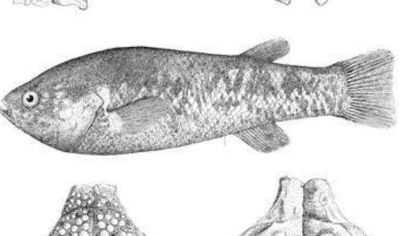

Systématique
- Ordre : Cyprinodontiformes
- Famille : Goodeidae
- Genre : Empetrichthys
- Espèce : E. merriami
- Auteur : Gilbert, 1893

Empetrichthys merriami, autrefois présent dans le sud du Nevada, est une espèce éteinte de la famille des Goodeidae. Au sein de la sous-famille des Empetrichthyinae, il se distinguait par sa taille imposante, étant le plus grand représentant de son genre. Comme les autres membres de son groupe, il était **ovipare** et dépourvu de nageoires pelviennes.
Il pouvait atteindre une longueur totale de près de 15 cm, bien que la moyenne se situait autour de 10 cm. Son corps était massif, particulièrement au niveau de la tête qui était large et aplatie sur le dessus. Sa coloration était décrite comme sombre sur le dos, s'éclaircissant vers les flancs avec des marbrures ou des taches irrégulières.
L'espèce est officiellement classée comme **"Éteinte" (EX)** par l'UICN. Les derniers spécimens vivants ont été observés dans les années 1940 et l'espèce a été déclarée disparue au début des années 1950. Sa perte est attribuée à une combinaison fatale : destruction de l'habitat (assèchement des sources), introduction d'espèces prédatrices (truites, centrarchidés) et compétition avec des espèces invasives.
On sait peu de choses sur son éthologie précise, mais Empetrichthys merriami était un habitant benthique des sources profondes. Sa taille suggère qu'il occupait un rôle de prédateur de micro-invertébrés plus significatif que son cousin E. latos.
Il fréquentait les eaux claires et fraîches des oasis du désert d'Ash Meadows. Contrairement à de nombreux Cyprinodontiformes du désert, il ne semblait pas s'aventurer dans les eaux très peu profondes ou extrêmement chaudes, préférant la stabilité thermique des bassins de sources principaux.
Mode : Ovipare.
À l'instar des autres Empetrichthyinae, il ne pratiquait pas la viviparité. Les femelles pondaient des œufs qui étaient probablement déposés sur le substrat rocheux ou la végétation submergée. Les détails précis sur la période de frai ou le développement des alevins n'ont jamais pu être documentés scientifiquement avant son extinction.
Dimorphisme sexuel : Les récits historiques indiquent que les femelles atteignaient des tailles supérieures aux mâles. Comme chez les autres espèces ovipares de la famille, aucun organe copulateur (andropodium) n'était présent.
Espérance de vie : Inconnue, probablement supérieure à 5 ans compte tenu de sa taille adulte.
L'espèce était endémique du système de sources d'Ash Meadows, dans le comté de Nye, au Nevada. Elle peuplait des sources spécifiques comme Eagle Spring, Point of Rocks Spring et Jackrabbit Spring. Ces sources fournissaient une eau alcaline et minéralisée, avec une température constante d'environ 20 à 25 °C.
Le biotope original était riche en gastéropodes endémiques et en végétation aquatique. La modification radicale de ces sources pour l'agriculture et l'introduction de poissons de sport ont rendu l'environnement totalement inhospitalier pour cette espèce spécialisée.
Répartition

Origine naturelle :
- États-Unis : Nevada (Ash Meadows, Nye County).
- Système de sources du désert d'Amargosa.
- Statut : Éteint (Extinct).
Aucun spécimen n'a été maintenu en captivité. C'est une perte définitive pour la biodiversité des poissons du Grand Bassin.
Paramètres de maintenance
Note : Espèce éteinte.
Température : Estimée entre 20 et 26 °C.
pH : Estimé entre 7,5 et 8,0.
GH : Très élevé (eau très dure/minéralisée).
Courant : Faible.
Volume conseillé : N/A.
Régime alimentaire
Régime : Carnivore / Molluscivore.
Les analyses de contenus stomacaux de spécimens de musées ont révélé une préférence marquée pour les petits mollusques aquatiques (escargots du genre Pyrgulopsis) et les larves d'insectes aquatiques. Sa dentition pharyngienne était adaptée au broyage des coquilles.